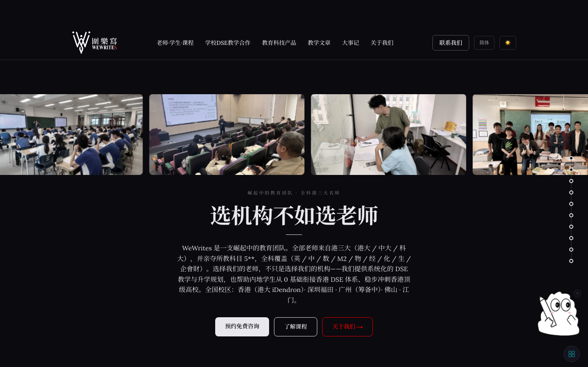

01 · Brand site
WeWrites
Site and content system for a DSE tutoring team: bilingual copy, class photography, teacher and course pages, and a deployment path that a non-developer can update.
- Live on its own domain, updated by the team without a developer
- Dark editorial layout, built to survive real class photos rather than placeholders